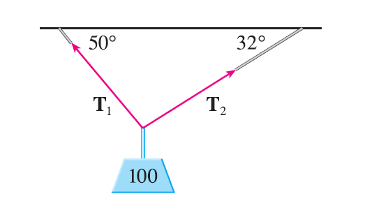
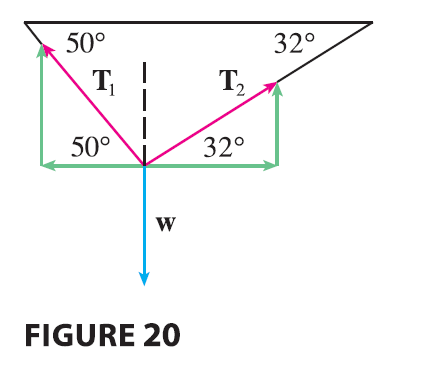

Vectors are useful in many aspects of physics and engineering. In
Chapter 13 we will see how they describe the velocity and acceleration
of objects moving in space. Here we look at forces.
A force is represented by a vector because it has
both a magnitude (measured in pounds or newtons) and a direction. If
several forces are acting on an object, the resultant
force experienced by the object is the vector sum of these
forces.
EXAMPLE 7 A 100-lb weight hangs from two wires as
shown in Figure 19. Find the tensions (forces) \(\mathbf{T}_1\) and \(\mathbf{T}_2\) in both wires and the
magnitudes of the tensions.

SOLUTION We first express \(\mathbf{T}_1\) and \(\mathbf{T}_2\) in terms of their horizontal
and vertical components. From Figure 20 we see that

\[
\mathbf{T}_1 = -|\mathbf{T}_1|\cos 50^\circ \mathbf{i} +
|\mathbf{T}_1|\sin 50^\circ \mathbf{j}
\tag{5}
\]\[
\mathbf{T}_2 = |\mathbf{T}_2|\cos 32^\circ \mathbf{i} +
|\mathbf{T}_2|\sin 32^\circ \mathbf{j}
\tag{6}
\] The resultant \(\mathbf{T}_1 +
\mathbf{T}_2\) of the tensions counterbalances the weight \(\mathbf{w} = -100\mathbf{j}\) and so we
must have \[
\mathbf{T}_1 + \mathbf{T}_2 = -\mathbf{w} = 100\mathbf{j}
\] Thus \[
(-|\mathbf{T}_1|\cos 50^\circ + |\mathbf{T}_2|\cos 32^\circ)\mathbf{i} +
(|\mathbf{T}_1|\sin 50^\circ + |\mathbf{T}_2|\sin 32^\circ)\mathbf{j} =
100\mathbf{j}
\] Equating components, we get \[
-|\mathbf{T}_1|\cos 50^\circ + |\mathbf{T}_2|\cos 32^\circ = 0
\]\[
|\mathbf{T}_1|\sin 50^\circ + |\mathbf{T}_2|\sin 32^\circ = 100
\] Solving the first of these equations for \(|\mathbf{T}_2|\) and substituting into the
second, we get \[
|\mathbf{T}_1|\sin 50^\circ + \frac{|\mathbf{T}_1|\cos 50^\circ}{\cos
32^\circ}\sin 32^\circ = 100
\]\[
|\mathbf{T}_1|\left(\sin 50^\circ + \cos 50^\circ \frac{\sin
32^\circ}{\cos 32^\circ}\right) = 100
\] So the magnitudes of the tensions are \[
|\mathbf{T}_1| = \frac{100}{\sin 50^\circ + \tan 32^\circ \cos 50^\circ}
\approx 85.64 \text{ lb}
\] and \[
|\mathbf{T}_2| = \frac{|\mathbf{T}_1|\cos 50^\circ}{\cos 32^\circ}
\approx 64.91 \text{ lb}
\] Substituting these values in (5) and (6), we obtain the
tension vectors \[
\mathbf{T}_1 \approx -55.05\mathbf{i} + 65.60\mathbf{j} \quad
\mathbf{T}_2 \approx 55.05\mathbf{i} + 34.40\mathbf{j}
\]